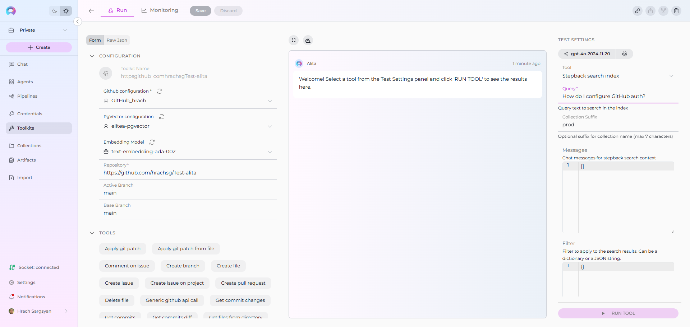
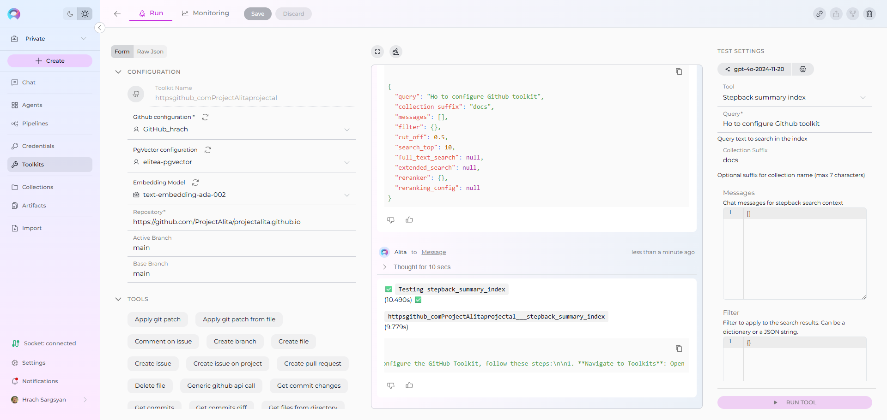
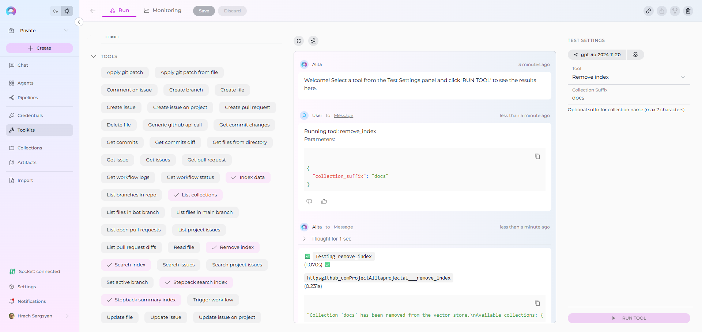

Indexing Tools¶
Availability
Indexing tools are available in the Next environment (Release 1.7.0) and replace legacy Datasources/Datasets. For context, see Release Notes 1.7.0 and the Indexing Overview.
This guide explains each indexing tool, required vs optional settings, and which toolkits it applies to.
Prerequisites (once per project/toolkit)¶
- Credential for your toolkit (required for all except Artifact). See Create a Credential.
- Vector Storage: PgVector selected in Settings → AI Configuration.
- Embedding Model selected in AI Configuration (defaults available).
- A configured Toolkit that supports indexing. See Indexing Overview.
Supported toolkits: ADO Repos, ADO Wiki, ADO Plans, ADO Boards, Bitbucket, GitHub, GitLab, Confluence, Jira, SharePoint, Artifact, Figma, TestRail, Xray Cloud, Zephyr Enterprise, Zephyr Essential, Zephyr Scale.
Index Data¶
Create or update an index from your source system.
Where to run it: Open your Toolkit → TEST SETTINGS → select “Index data” → configure → RUN TOOL.

Purpose¶
- Build a new index collection or update an existing one for later search and Q&A.
Common Settings and Parameters¶
| UI Label | Description | Required? | Default Value | Validation/Allowed |
|---|---|---|---|---|
| Collection Suffix | Used to separate datasets | Yes | - | max_length=7, min_length=1 |
| Progress Step | Step size for progress reporting | No | 10 | ge=0, le=100 |
| Clean Index | Clean existing index before re-indexing | No | FALSE | - |
| Chunking Tool | Name of chunking tool to apply | No | - | - |
| Chunking Config | Configuration for chunking tool | No | {} | - |
Tip
If you’re not sure, start with defaults. You can re‑run indexing later with refined settings.
Toolkit Specific Settings and Parameters¶
| Toolkit type | UI Label | Description | Required? | Default | Validation/Allowed |
|---|---|---|---|---|---|
| Repositories (GitHub, GitLab, Bitbucket, ADO Repos) | Branch | Branch to index files from; defaults to the repository's active branch if None. | No | - | - |
| Repositories (GitHub, GitLab, Bitbucket, ADO Repos) | Whitelist | Allow-list of file extensions or paths to include. Defaults to all files if None. Example: [".md", ".java"]. | No | - | - |
| Repositories (GitHub, GitLab, Bitbucket, ADO Repos) | Blacklist | Deny-list of file extensions or paths to exclude. Defaults to no exclusions if None. Example: [".md", ".java"]. | No | - | - |
| Test Management (Zephyr Enterprise) | Zql | ZQL query to search for test cases; Supported: estimatedTime, testcaseId, creator, release, project, priority, altId, version, versionId, automated, folder, contents, name, comment, tag; Examples: folder="TestToolkit", name~"TestToolkit5". | No | - | ZQL syntax |
| Test Management (Zephyr Scale) | Project Key | Jira project key filter (e.g., "PROJ"). | No | - | Jira project key |
| Test Management (Zephyr Scale) | Jql | JQL-like query for searching test cases; Supported fields: folder (exact name), folderPath (full path), label, text (name/description), customFields (JSON string), steps, orderBy, orderDirection (ASC | DESC), limit, includeSubfolders (true | false), exactFolderMatch (true | false); Example: 'folder = "Authentication" AND label in ("Smoke", "Critical") AND text ~ "login" AND orderBy = "name" AND orderDirection = "ASC"'. |
| ADO Boards | Wiql | WIQL (Work Item Query Language) query string to select and filter Azure DevOps work items. | Yes | - | WIQL syntax |
| ADO Plans | Plan Id | ID of the test plan for which test cases are requested. | Yes | - | numeric ID |
| ADO Plans | Suite Ids | List of test suite IDs for which test cases are requested (can be empty to index all suites from the plan). Example: [2, 23]. | No | - | array of numeric IDs |
| ADO Wiki | Wiki Identifier | Wiki identifier to index (e.g., "ABCProject.wiki"). | Yes | - | string |
| ADO Wiki | Title Contains | Include only pages with titles containing this exact string. | No | - | string (exact match) |
| SharePoint | Limit Files | Limit (maximum number) of files to return; supports synonyms like First, Top, or a numeric literal (e.g., "Top 10 files"). If not specified, use the default with no extra confirmation from a user. | No | 1000 | number or synonym keyword |
| SharePoint | Include Extensions | List of file extensions to include when processing; if empty, all files are processed (except those in Skip Extensions). Example: [".png", ".jpg"]. | No | - | array of glob patterns |
| SharePoint | Skip Extensions | List of file extensions to skip when processing. Example: [".png", ".jpg"]. | No | - | array of glob patterns |
| Figma | Project Id | ID of the project to list files from (e.g., 55391681). | No | - | numeric ID |
| Figma | File Keys Include | List of file keys to include in index if Project Id is not provided. Example: ["Fp24FuzPwH0L74ODSrCnQo", "jmhAr6q78dJoMRqt48zisY"]. | No | - | array of strings |
| Figma | File Keys Exclude | List of file keys to exclude from index; applied only if Project Id is provided and File Keys Include is not provided. Example: ["Fp24FuzPwH0L74ODSrCnQo", "jmhAr6q78dJoMRqt48zisY"]. | No | - | array of strings |
| Figma | Node Ids Include | List of top-level nodes (pages) in a file to include in index; node-id from Figma URL. Example: ["123-56", "7651-9230"]. | No | - | array of strings |
| Figma | Node Ids Exclude | List of top-level nodes (pages) to exclude; applied only if Node Ids Include is not provided; node-id from Figma URL. | No | - | array of strings |
| Figma | Node Types Include | List of node types to include (e.g., FRAME, COMPONENT, RECTANGLE, COMPONENT_SET, INSTANCE, VECTOR). | No | - | array of enums |
| Figma | Node Types Exclude | List of node types to exclude; applied only if Node Types Include is not provided. | No | - | array of enums |
| TestRail | Project Id | TestRail project ID to index data from. | Yes | - | numeric ID |
| TestRail | Suite Id | Optional TestRail suite ID to filter test cases. | No | - | numeric ID |
| TestRail | Section Id | Optional section ID to filter test cases. | No | - | numeric ID |
| TestRail | Include Attachments | Whether to include attachment content in indexing. Selected by default. | No | TRUE | boolean |
| TestRail | Skip Attachment Extensions | List of file extensions to skip when processing attachments (e.g., ['.png', '.jpg']). | No | - | array of extensions |
| Xray Cloud | Jql | JQL query for searching test cases in Xray. Supported fields include project, testType, labels, summary, description, status, priority. Example: project = "CALC" AND testType = "Manual" AND labels in ("Smoke", "Critical"). | No | - | JQL syntax |
| Xray Cloud | Graphql | Custom GraphQL query for advanced data extraction. Should return test objects (issueId, jira, testType, steps, etc.). Example: query { getTests(jql: "project = \"CALC\"") { results { issueId jira(fields: ["key"]) testType { name } steps { action result } } } }. | No | - | GraphQL syntax |
| Xray Cloud | Include Attachments | Whether to include attachment content in indexing. | No | - | boolean |
| Xray Cloud | Skip Attachment Extensions | List of file extensions to skip when processing attachments (e.g., ['.exe', '.zip', '.bin']). | No | - | array of extensions |
| Confluence | Content Format | Render format for page content. | No | view | string (e.g., 'view') |
| Confluence | Page Ids | List of page IDs to retrieve. | No | - | array of IDs |
| Confluence | Label | Label to filter pages. | No | - | string |
| Confluence | Cql | CQL query to filter pages. | No | - | CQL syntax |
| Confluence | Limit | Limit the number of results. | No | 10 | number |
| Confluence | Max Pages | Maximum number of pages to retrieve. | No | 1000 | number |
| Confluence | Include Restricted Content | Include content with view restrictions (if permitted). | No | - | boolean |
| Confluence | Include Archived Content | Include archived pages in results. | No | - | boolean |
| Confluence | Include Attachments | Whether to include attachment content in indexing. | No | - | boolean |
| Confluence | Include Comments | Include page comments in indexing. | No | - | boolean |
| Confluence | Include Labels | Include page labels in indexing. | No | TRUE | boolean |
| Confluence | Ocr Languages | OCR languages for processing attachments. | No | eng | language codes (e.g., 'eng') |
| Confluence | Keep Markdown Format | Keep Markdown formatting in output. | No | TRUE | boolean |
| Confluence | Keep Newlines | Preserve newlines in extracted content. | No | TRUE | boolean |
| Confluence | Bins With Llm | Use LLM for processing binary files. | No | - | boolean |
| Jira | Jql | JQL query to filter issues; if omitted, all accessible issues are indexed. Examples: 'project=PROJ', 'parentEpic=EPIC-123', 'status=Open'. | No | - | JQL syntax |
| Jira | Fields To Extract | Additional fields to extract from issues. | No | - | array of field keys |
| Jira | Fields To Index | Additional fields to include in indexed content. | No | - | array of field keys |
| Jira | Include Attachments | Whether to include attachment content in indexing. | No | - | boolean |
| Jira | Max Total Issues | Maximum number of issues to index. | No | 1000 | number |
| Jira | Skip Attachment Extensions | List of file extensions to skip when processing attachments (e.g., ['.png', '.jpg']). | No | - | array of extensions |
Search Index¶
Search your indexed content using natural language.
Where to run it: Toolkit → TEST SETTINGS → select “Search index” → configure → RUN TOOL.

Purpose¶
- Retrieve relevant chunks from one or more index collections.
Common Settings and Parameters¶
| UI Label | Description | Required? | Default | Validation/Allowed |
|---|---|---|---|---|
| Query | Query text to search in index | Yes | - | - |
| Collection Suffix | Search specific dataset or all if empty | No | "" | max_length=7 |
| Filter | Metadata filter for search results | No | {} | JSON format |
| Cut-off Score | Minimum similarity score threshold | No | 0.5 | - |
| Search Top | Number of top results to return | No | 10 | - |
| Reranker | Reranker configuration | No | {} | - |
| Full Text Search | Full text search configuration | No | - | JSON with enabled, weight, fields, language |
| Reranking Config | Advanced reranking configuration | No | - | JSON with field weights and rules |
| Extended Search | Additional chunk types to search | No | - | title,summary,propositions,keywords,documents |
Note
Applicable to all toolkits that support indexing.
Stepback Search Index¶
Advanced search that first “simplifies” your query for better matches and can consider conversation context.
Where to run it: Toolkit → TEST SETTINGS → “Stepback search index”.

Purpose¶
- Improve retrieval by transforming your question (e.g., “How do I configure GitHub auth?” → “configure GitHub authentication”). Returns raw results.
Common Settings and Parameters¶
| UI Label | Description | Required? | Default | Validation/Allowed |
|---|---|---|---|---|
| Query | Query text to search in index | Yes | - | - |
| Collection Suffix | Search specific dataset or all if empty | No | "" | max_length=7 |
| Filter | Metadata filter for search results | No | {} | JSON format |
| Messages | Chat messages for stepback search context | No | {} | JSON format |
| Cut-off Score | Minimum similarity score threshold | No | 0.5 | - |
| Search Top | Number of top results to return | No | 10 | - |
| Reranker | Reranker configuration | No | {} | - |
| Full Text Search | Full text search configuration | No | - | JSON with enabled, weight, fields, language |
| Reranking Config | Advanced reranking configuration | No | - | JSON with field weights and rules |
| Extended Search | Additional chunk types to search | No | - | title,summary,propositions,keywords,documents |
Note
- Applicable to all toolkits that support indexing.
- Output is a list of matching documents/chunks. If you prefer a generated answer, use Stepback Summary Index.
Stepback Summary Index¶
Contextual search plus an AI‑generated answer, with optional citations.
Where to run it: Toolkit → TEST SETTINGS → “Stepback summary index”.

Purpose¶
- Combine stepback search with a concise, human‑readable answer. Good for end‑users who want a direct response.
¶
Common Settings and Parameters¶
| UI Label | Description | Required? | Default | Validation/Allowed |
|---|---|---|---|---|
| Query | Query text to search in index | Yes | - | - |
| Collection Suffix | Search specific dataset or all if empty | No | "" | max_length=7 |
| Filter | Metadata filter for search results | No | {} | JSON format |
| Messages | Chat messages for stepback search context | No | {} | JSON format |
| Cut-off Score | Minimum similarity score threshold | No | 0.5 | - |
| Search Top | Number of top results to return | No | 10 | - |
| Reranker | Reranker configuration | No | {} | - |
| Full Text Search | Full text search configuration | No | - | JSON with enabled, weight, fields, language |
| Reranking Config | Advanced reranking configuration | No | - | JSON with field weights and rules |
| Extended Search | Additional chunk types to search | No | - | title,summary,propositions,keywords,documents |
Note
- Applicable to all toolkits that support indexing.
- If the answer lacks sources, increase Search Top or lower Cut Off slightly to include more candidate passages.
Remove Index¶
Delete an existing collection (index) when it’s no longer needed.
Where to run it: Toolkit → TEST SETTINGS → “Remove index”.

Purpose¶
- Clean up test data or retire outdated collections.
Applies to toolkits¶
- All toolkits that support indexing.
Fields¶
| Field | Description | Required | Applicable toolkits |
|---|---|---|---|
| Collection Suffix | Name of the collection to remove. | Yes | All |
Warning
Removing an index deletes its data from vector storage for this toolkit. Make sure you’re targeting the correct collection.
List Collections¶
List all available collections for the toolkit.
Where to run it: Toolkit → TEST SETTINGS → “List collections”.

Purpose¶
- Quickly verify what indexes exist and their names (suffixes).
Fields¶
| Field | Description | Required | Applicable toolkits |
|---|---|---|---|
| (none) | No input required; runs immediately. | — | All |
Stepback tools: quick comparison¶
| Aspect | Stepback Search Index | Stepback Summary Index |
|---|---|---|
| Output | Raw results (document chunks with scores) | Short, AI‑generated answer with optional citations |
| Uses conversation context | Yes (for query transform) | Yes (for search + answer) |
| Best for | Exploring documents, exporting results | Direct answers for end‑users |
| Cost/latency | Lower | Higher |
Tips and troubleshooting¶
- If Search returns few/no results, try lowering Cut Off (e.g., from 0.5 to 0.35) or increasing Search Top.
- Use Collection Suffix consistently (e.g., prod/test) so you can target the right dataset later.
- For better Q&A, consider Proposal chunking when indexing (enables titles/summaries/propositions).
- Known limitations and workarounds: see Release Notes 1.7.0.
Related guides
- Indexing Overview
- Per‑toolkit examples: GitHub, Confluence, Jira, SharePoint
- AI Configuration